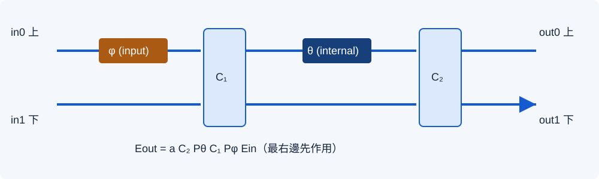
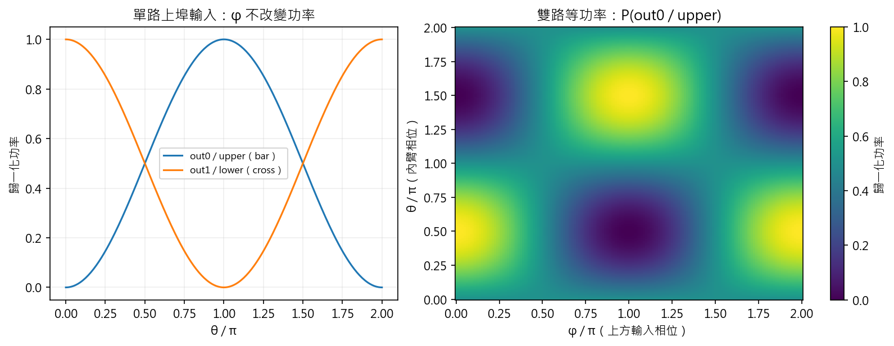

M0 S3｜共用光學模型與單元測試
統一埠序與複數相位，用可重現的模型、測試與受控錯誤，建立後續光邏輯的計算基準。
18/18 單元測試5 種錯誤注入80/80 相容回放本輪結果：18/18 個測試方法通過；5/5 種受控錯誤被抓到；舊相位設定相容性回放 80/80。學員作答另行提交。
1．先預測，再看程式
建議 60 分鐘：讀圖與預測 10 分、共用模型 10 分、執行測試 10 分、修改範例 10 分、分析錯誤 10 分、交接記錄 10 分。
- 只打上埠、θ=0，光應從上埠還是下埠離開？
- 只打一路時，φ 改變會不會改變兩路輸出功率？若兩路同時打光呢？
- 每一顆元件都通過功率守恆，是否代表相位與埠序一定正確？
- 兩個矩陣依序作用時，為何後遇到的元件乘在左邊？
2．先固定埠序與物理位置

| 物理位置 | 本步／M0 S1 外部埠 | PDK MMI 埠 | M0 S2 場圖局部埠 |
|---|---|---|---|
| 上方 | index 0，in0／out0 | in2／out2 | in2／out2，但在向量 index 1 |
| 下方 | index 1，in1／out1 | in1／out1 | in1／out1，但在向量 index 0 |
M0 S2 的局部向量以 [lower, upper] 排列。本步使用交換矩陣 P 同時變換輸入、輸出：T_lower=P·T_upper·P。只換輸出兩列會代表另一個映射。這個 2×2 換序用於單顆 MZI；B7 使用另外的五路全域埠表。
3．把結構寫成複數矩陣
H = (1/√2) [[1, i], [i, 1]]
Pφ = diag(exp(iφ), 1)
Pθ = diag(exp(iθ), 1)
a = 10^(−loss_db/20)
T(θ, φ) = a · C₂ · Pθ · C₁ · Pφ
理想時 C₁=C₂=H理想矩陣可獨立展開為：
T = a i exp(iθ/2) [[exp(iφ) sin(θ/2), cos(θ/2)],
[exp(iφ) cos(θ/2), −sin(θ/2)]]先算 Eout=T·Ein，再算各埠 P=|E|²。單路上埠輸入時，bar 功率為 sin²(θ/2)，cross 為 cos²(θ/2)。程式使用弧度；範例設定的 theta_pi、phi_pi 則以 π 為單位，讀取後才轉成弧度。
共用模組放在哪裡？
| 模組／函式 | 用途 | 輸入約定 |
|---|---|---|
| common/mzi.py · T2／transfer_matrix | MZI 複數 2×2 矩陣 | θ／φ 為弧度；loss_db≥0；兩個 coupler 誤差各在 [−0.5,0.5]。 |
| mzi.apply_matrix／powers／trace | 求光場、功率與中間步驟 | 使用複數場；輸入不會被函式改寫。 |
| mzi.to_lower_first | 與 M0 S2 局部埠序相容 | 同時交換輸入與輸出。 |
| mzi.theta_for_bar | 由目標 bar 比例求 θ∈[0,π] | 比例限 [0,1]；超出範圍回報 ValueError。 |
| mzi.propagation_factor | 均勻段的相位與可選插入損耗 | n_eff 為實數；長度與波長使用相同單位。 |
| common/linear_network.py | 2×2 嵌入、依序串接與固定功率差判讀 | 傳播順序列在前的元件先遇到；零裕量回傳 bit=None。 |
4．學員執行與修改範例
Set-Location -LiteralPath 'C:\EDA_Codex\Lab06b'
& .\scripts\run_m0_s3.ps1使用 m0_s3_example.json，可觀察與修改輸入、θ、φ、loss_db 和兩顆耦合器的誤差。這些設定只作用於教學範例；標準測試及相容性回放使用各自固定案例。
- 基準：theta_pi=0.5、phi_pi=1、兩路同相等振幅、loss_db=0。預測輸出後再執行。
- 只將 phi_pi 改為 0，再執行；記錄光轉到哪個埠。
- 把 phi_pi 還原為 1，再把 loss_db 改為 3；輸出方向相同，總功率應為輸入的 10⁻⁰·³≈0.501187 倍。
- 完成後還原範例設定；把自己的設定副本與觀察存入 learner/。
測試入口：test_optical_models.py；執行與證據入口：run_models.py。
本輪範例：沿光路逐步追蹤
目前 θ=0.500π、φ=1.000π、loss_db=0.000。複數場以 real±imag·i 表示。
| 位置 | E upper | E lower | P upper | P lower | 總功率 |
|---|---|---|---|---|---|
| input | 0.707107+0.000000i | 0.707107+0.000000i | 0.500000 | 0.500000 | 1.000000 |
| after_phi | -0.707107+0.000000i | 0.707107+0.000000i | 0.500000 | 0.500000 | 1.000000 |
| after_MMI1 | -0.500000+0.500000i | 0.500000-0.500000i | 0.500000 | 0.500000 | 1.000000 |
| after_theta | -0.500000-0.500000i | 0.500000-0.500000i | 0.500000 | 0.500000 | 1.000000 |
| after_MMI2 | 0.000000+0.000000i | 0.707107-0.707107i | 0.000000 | 1.000000 | 1.000000 |
| after_uniform_loss | 0.000000+0.000000i | 0.707107-0.707107i | 0.000000 | 1.000000 | 1.000000 |
5．θ／φ 如何改變輸出

先在頁面預測
這是解析功率式的互動預習；Python 複數矩陣與測試 JSON 為正式證據。輸入總功率固定為 1，模型為理想無損。
6．單元測試與受控錯誤
| 項目 | 結果 | 證據 |
|---|---|---|
| 正常模型的單元測試 | 18/18 個測試方法；0 失敗、0 錯誤 | 原始測試 log |
| 受控錯誤注入 | 5/5 被對應測試指出 | 每次暫時替換函式，測試後於 finally 還原。 |
| 還原後的整套測試 | 通過 | 還原驗證 log |
測試包含：完整複數矩陣、耦合器 90° 相位、切換／分光、隨機相位與分光誤差下的么正性、損耗換算、共同／相對相位、2π 週期、埠序轉換、非法參數、非相鄰埠嵌入、串接順序、邊界判讀、S2 相容及舊 B7 回放。18 個測試方法內含多組參數案例。
查看全部測試方法
| 方法 | 結果 |
|---|---|
test_b7_80_cases_against_boolean_truth_and_saved_complex_U | 通過 |
test_closed_form_complex_regression | 通過 |
test_complex_phase_periodicity | 通過 |
test_effective_index_phase_and_units | 通過 |
test_exact_switch_and_split_matrices | 通過 |
test_global_phase_invariance | 通過 |
test_insertion_loss_is_power_db | 通過 |
test_inverse_bar_fraction | 通過 |
test_lower_first_adapter_matches_s2_convention | 通過 |
test_mmi_quadrature_and_unitarity | 通過 |
test_no_input_or_constant_mutation | 通過 |
test_nonadjacent_embedding_and_order | 通過 |
test_parameter_guards | 通過 |
test_phi_single_input_power_and_two_input_interference | 通過 |
test_readout_boundary_has_no_valid_bit | 通過 |
test_scalar_path_replay_matches_matrix | 通過 |
test_trace_and_propagation_agree | 通過 |
test_unitarity_with_coupler_imbalance | 通過 |
| 錯誤 | 對應測試 | 本輪結果 |
|---|---|---|
| 用實數 Hadamard 取代光學耦合器 | test_exact_switch_and_split_matrices | 已抓到；已還原 |
| 交換 θ／φ 的物理位置 | test_closed_form_complex_regression | 已抓到；已還原 |
| 把功率衰減因子套到光場 | test_insertion_loss_is_power_db | 已抓到；已還原 |
| 反轉矩陣串接順序 | test_nonadjacent_embedding_and_order | 已抓到；已還原 |
| 把零裕量誤判成 1 | test_readout_boundary_has_no_valid_bit | 已抓到；已還原 |
這些注入 log 內的失敗是預期證據，不代表正式模型未通過。實數 Hadamard 仍可通過么正性，卻不符合本課程的光學相位約定；因此需要複數矩陣與已知切換態的測試。
7．舊 B7 設定的相容性回放
本段供講師確認共用模型與既有資料一致；B7 組網的學員主實作仍在 M1。沿用舊課程的七顆 MZI 排程與十四相位，重新計算五個函數各 16 組四路輸入，並核對儲存的完整複數 U。
| 函數 | 通過／總數 | 最小有號裕量 | 複數 U 最大差 |
|---|---|---|---|
| AND2 | 16/16 | 2.115379 | 1.24e-15 |
| OR2 | 16/16 | 2.120502 | 1.39e-15 |
| XOR2 | 16/16 | 0.250000 | 1.12e-15 |
| AND4 | 16/16 | 1.496028 | 9.16e-16 |
| OR4 | 16/16 | 1.499855 | 8.25e-16 |
判讀為 ΔP=P(out1)−P(out3)，正值判 1、負值判 0；|ΔP|≤ε 時 bit=None。回放使用理想無損模型、參考光振幅 R=3；未驗證新 PDK、熱控制或實體 Chip。80 筆 CSV · 舊相位來源與 SHA-256。
8．接回 S2 的物理參數
沿用 S2 的 n_eff=2.353500、λ=1.55 µm，均勻段相位為 βL=2πn_effL／λ。若兩臂只差幾何長度，π 相位差對應 ΔL≈0.329297 µm。
固定長度上改折射率，則使用 Δθ=2πΔn_effL／λ；與上列幾何長度差是兩種參數變化。這些公式不直接給出 heater 電壓，也沒有包含真實路徑的色散或損耗校正。
| 交付 | 通過條件 |
|---|---|
| 共用 mzi.py 與 linear_network.py | 向量順序、相位位置、單位與範圍寫清楚；輸入不會被函式修改。 |
| 單元測試、錯誤注入與回放 JSON | 正式模型全通過、受控錯誤被抓到、還原後通過；邊界不得算有效邏輯。 |
| θ／φ 圖、範例中間場與觀察記錄 | 能解釋單路／雙路輸入差異、光場與功率、矩陣乘法順序。 |
| 學員提交 | 還原範例設定，提交自己的修改前後結果，由講師確認。 |
下一步 M1 S1：光訊號做邏輯：輸入編碼、相干參考光 R、混合與功率差讀取。此處完成的是共用模型與測試基準，後續仍需建立 B7、PDK 模擬、Chip 版圖與驗證。